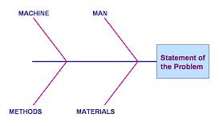
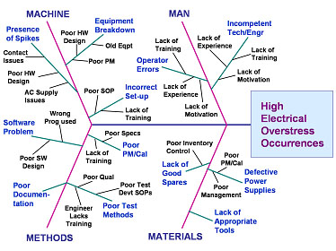

Ishikawa
Diagram
The
Ishikawa Diagram, also known as the
Fishbone Diagram or
the Cause-and-Effect
Diagram,
is a tool used for systematically identifying and presenting all the
possible causes of a particular problem
in graphical format. The possible causes are presented at various
levels of detail in connected branches, with the level of detail
increasing as the branch goes outward, i.e., an outer branch is a cause
of the inner branch it is attached to. Thus, the outermost
branches usually indicate the root causes of the problem.
The Ishikawa
Diagram resembles a
fishbone
(hence the
alternative name "Fishbone Diagram") - it has a box (the 'fish head')
that contains the statement of the problem at one end of the diagram.
From this box originates the main branch (the 'fish spine') of the
diagram. Sticking out of this main branch are major branches that
categorize the causes according to their nature.
In
semiconductor manufacturing, 4 major branches are often used by
beginners, referred to as the
'4 M's', corresponding to 'Man',
'Machine', 'Materials', and 'Methods'. Sometimes 5 branches are used
('5 M's'), with the fifth branch standing for 'Measurement', or even
'M-vironment.' These 'M's' or problem cause categories are
used to classify each cause identified for easier analysis of data. Of course, one is not
constrained to use these categories in a fishbone diagram.
Experienced users of the diagram add more branches and/or use different categories, depending
on what would be more effective in dealing with the problem. Figure 1
shows the
basic
framework
of an Ishikawa Diagram.
|
 |
|
Figure 1.
The Basic '4 M's' Framework of an Ishikawa Diagram |
The Ishikawa Diagram is
employed by a problem-solving team as a tool for
collating
all
inputs (as to what are the causes of the problem they're addressing) systematically and graphically,
with the inputs usually coming from a brainstorming session. It
enables the team to
focus
on
why
the problem occurs, and not on the history or symptoms of the problem,
or other topics that digress from the intent of the session. It also
displays a real-time
'snap-shot'
of the
collective inputs of the team as it is updated.
The Ishikawa
Diagram is usually constructed by the problem-solving team using the
following basic steps:
1)
prepare the basic framework of the Ishikawa Diagram on a large
writing area, such as a whiteboard or a flipchart;
2) define the problem
that needs to be addressed and describe it in clear and specific terms,
then write this description in the problem box or fish head of the
diagram;
3) finalize the cause
categories of the major branches and write these at the tips of the
major branches; if the members are all new to the Ishikawa Diagram and
can't decide on which categories to write, use the 4 M's as categories;
4)
conduct the
brainstorming
session
using these basic brainstorming guidelines:
a) each
participant will be asked one at a time to give a cause of the problem
(only one input per turn!), saying 'Pass' if he or she can't think of
any during his or her turn;
b) each cause
identified will be 'hung' on the major branch of the category it belongs
to; if it's the cause of another cause that's already on the diagram,
then it must be 'hung' on the branch of the latter; if applicable, a
cause may be placed on several branches;
c) the
brainstorming session will continue until everyone says 'Pass'.
5) interpret
the Ishikawa Diagram once it's finished.
There are
many ways to interpret the Ishikawa Diagram. The fastest and
simplest way to do it is for the group to choose the top five causes on
the diagram and rank them, using their collective knowledge and any data
available. The selection of the major causes may be done by voting
or any other process that allows the group to agree on the ranking.
The selected causes are then encircled on the diagram, with their ranks
written beside them. The team may then investigate these causes
further and use problem-solving techniques to eliminate their
occurrences.

Figure 2.
Example of a simple but finished Ishikawa Diagram
See Also:
Pareto
Chart;
Brainstorming
HOME
Copyright
©
2001-2005
www.EESemi.com.
All Rights Reserved.